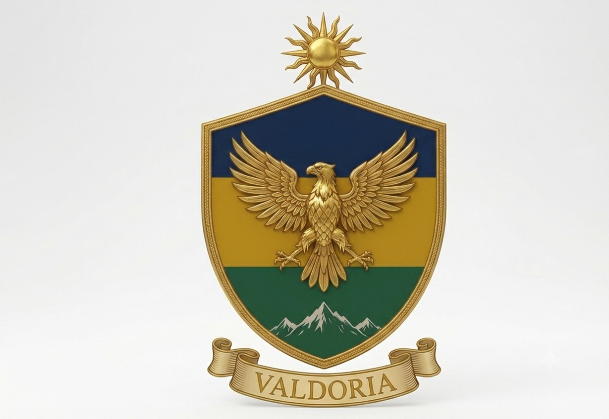
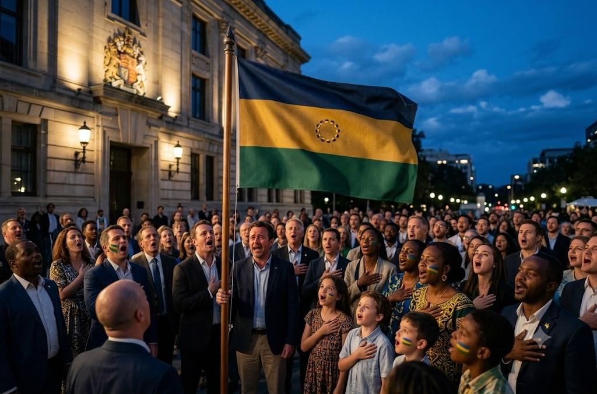

República de Valdoria
-
Azul profundo:
Representa el Mar de Valdoria y la profundidad del cielo nocturno que guió a los primeros navegantes.
-
Dorado:
Simboliza la riqueza del Sol, la esperanza y los recursos minerales del interior montañoso.
-
Verde Esmeralda:
Honra los bosques y la agricultura que sustentan al pueblo valdoriano.
-
El sol central: ocho rayos que representan las ocho provincias originales unidas en un solo destino.

Escudo de Armas
El escudo en forma de montaña invertida simboliza la cordillera Valdor, protectora del territorio. El águila esmeralda (ave nacional) representa la vigilancia y la libertad. La estrella dorada encima del escudo es el faro de unidad que iluminó la independencia en 1847.
“Justicia, Progreso y Libertad”
Lema Nacional Oficial desde 1847

Himno Nacional: "Valdoria Eterna"
Letra: Elena Morales — Música: Carlos Rivas
Estrofa I
Desde el mar que acaricia nuestra tierra,
hasta la cumbre donde el águila canta,
Valdoria erguida, madre y bandera,
tu luz en la sombra con fuerza levanta.
Coro
¡Valdoria, Valdoria! Patria de honor,
con justicia y progreso forjamos el sol.
¡Valdoria, Valdoria! Pueblo de valor,
la libertad vive en nuestro corazón.